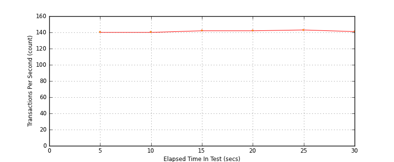
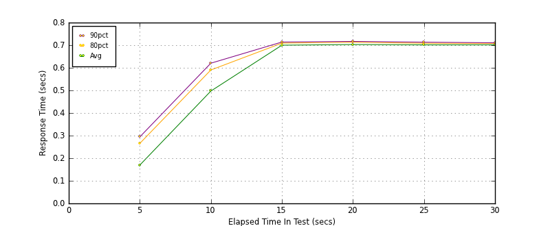
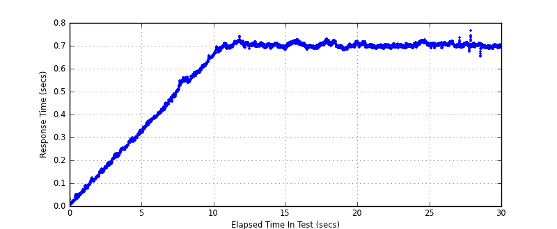

Performance Results Report
Summary
transactions: 4343
errors: 0
run time: 30 secs
rampup: 10 secs
test start: 2014-01-15 16:09:44
test finish: 2014-01-15 16:10:14
time-series interval: 5 secs
workload configuration:
| group name | threads | script name |
|---|
| user_group-1 | 100 | read_user.py |
All Transactions
Transaction Response Summary (secs)
| count | min | avg | 80pct | 90pct | 95pct | max | stdev |
|---|
| 4343 | 0.008 | 0.580 | 0.706 | 0.712 | 0.716 | 0.767 | 0.205 |
Interval Details (secs)
| interval | count | rate | min | avg | 80pct | 90pct | 95pct | max | stdev |
|---|
| 1 | 700 | 140.00 | 0.008 | 0.170 | 0.266 | 0.294 | 0.311 | 0.333 | 0.093 |
| 2 | 702 | 140.40 | 0.321 | 0.497 | 0.591 | 0.621 | 0.647 | 0.661 | 0.097 |
| 3 | 710 | 142.00 | 0.660 | 0.700 | 0.709 | 0.714 | 0.717 | 0.742 | 0.011 |
| 4 | 710 | 142.00 | 0.679 | 0.703 | 0.714 | 0.717 | 0.722 | 0.729 | 0.011 |
| 5 | 715 | 143.00 | 0.686 | 0.702 | 0.709 | 0.714 | 0.718 | 0.725 | 0.008 |
| 6 | 706 | 141.20 | 0.653 | 0.702 | 0.708 | 0.711 | 0.714 | 0.767 | 0.009 |
Graphs
Response Time: 5 sec time-series
Response Time: raw data (all points)
Throughput: 5 sec time-series

Custom Timer: get_tweets
Timer Summary (secs)
| count | min | avg | 80pct | 90pct | 95pct | max | stdev |
|---|
| 4243 | 0.008 | 0.580 | 0.706 | 0.711 | 0.716 | 0.766 | 0.205 |
Interval Details (secs)
| interval | count | rate | min | avg | 80pct | 90pct | 95pct | max | stdev |
|---|
| 1 | 700 | 140.00 | 0.008 | 0.169 | 0.265 | 0.294 | 0.311 | 0.332 | 0.093 |
| 2 | 702 | 140.40 | 0.321 | 0.497 | 0.590 | 0.620 | 0.647 | 0.660 | 0.097 |
| 3 | 710 | 142.00 | 0.660 | 0.700 | 0.709 | 0.714 | 0.717 | 0.742 | 0.011 |
| 4 | 710 | 142.00 | 0.679 | 0.703 | 0.713 | 0.717 | 0.722 | 0.728 | 0.011 |
| 5 | 715 | 143.00 | 0.685 | 0.701 | 0.708 | 0.713 | 0.718 | 0.725 | 0.008 |
| 6 | 706 | 141.20 | 0.653 | 0.702 | 0.708 | 0.711 | 0.714 | 0.766 | 0.009 |
Graphs
Response Time: 5 sec time-series

Response Time: raw data (all points)

Throughput: 5 sec time-series